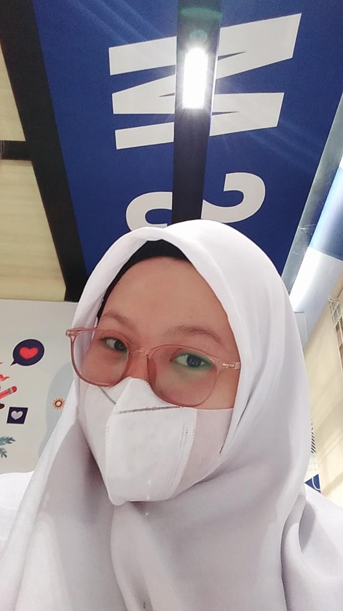
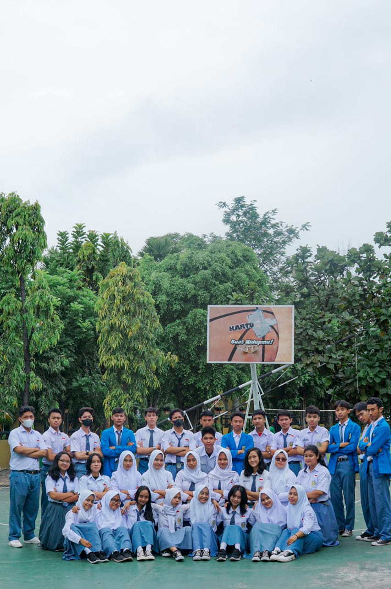

oke, uda pada penasaran ya?? Langsung aja
Kenalin Nama saya Imtiyas Zaizan Sodikoh biasa dipanggil "Imtiyas".
Alamat saya Jl.Bromo 2 RT03/04 Banjarsari, Surakarta. lahir di Klaten,Jawa tengah Pada tanggal 05 Maret 2005. Hobi saya bersepeda, cita-cita saya menjadi pengusaha muda yang sukses,Barokah Aamiin.
kesibukan saya menjadi siswi di SMKN 6 surakarta, mengambil jurusan multimedia. ngomong-ngomong tentang jurusan ada alasannya kenapa bisa ambil Multimedia.
saya mengambil Multimedia salah satu alasanya yaitu, bidang atau pelajaran yang diajarkan tidak akan putus sampai kapanpun. Karena dunia ini semakin maju, semakin canggih, apapun nanti pasti akan selalu menggunakan teknologi, gak itu tentang desain,animasi,foto vidio,Dsb.
karena itulah sangat dipastikan jika mengambil jurusan ini saya percaya bahwa nanti dimasa depan akan lebih menjanjikan,jika kita juga mau terus bereksplor tentang pesatnya dunia teknologi ini.

ya, itu saya
salam kenal semuanya
disini saya juga ingin memperlihatkan teman-teman sekelas saya

RIWAYAT PENDIDIKAN SAYA
SD Negeri Joglo No.76
2011-2017
SMP Budi Utomo Surakarta
2017-2020
SMK Negeri 6 Surakarta
2020-2023